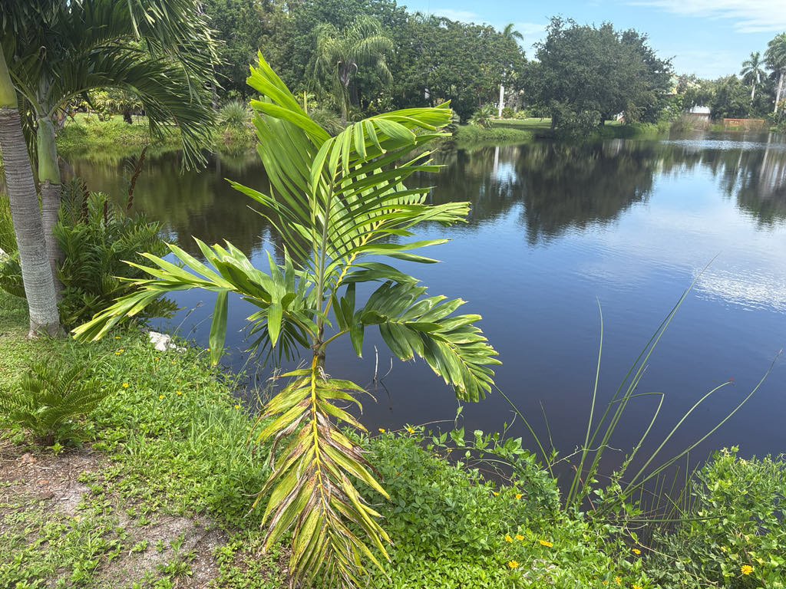

- Look up at the top of the trunk for the crownshaft — a smooth, waxy, pale green sleeve between the gray trunk and fronds. Dark speckling appears near the upper edge, making it a useful identification feature.
- Veitchia arecina is listed as Endangered on the IUCN Red List. It grows naturally only in Vanuatu, a South Pacific archipelago, where habitat loss threatens its remaining wild populations.
- This palm is named after Colonel Robert H. Montgomery, the plant collector who founded Fairchild Tropical Botanic Garden in Coral Gables in 1938 — naming the garden after his friend, plant explorer Dr. David Fairchild.
- The species epithet arecina is Latin for 'resembling an Areca.' The genus name Veitchia honors the Veitch family, the 19th-century British nursery dynasty. The older name Veitchia montgomeryana — still on many nursery labels — honors Montgomery directly.
Veitchia arecina is native to Vanuatu, a volcanic island archipelago in the southwestern Pacific, south of the Solomon Islands and west of Fiji. In the wild it grows in lowland and foothill rainforests from sea level to roughly 1,100 feet elevation, rooted in volcanic soils where rainfall is reliable and humidity consistently high.
The species has been in cultivation in Florida for decades and is grown in tropical and subtropical gardens worldwide, though it remains relatively uncommon compared to its more frost-tolerant relatives.
- Colonel Robert H. Montgomery (1872–1953) was an accountant and attorney by trade whose real life's work was assembling a remarkable collection of palms and cycads in Florida. That personal collection became the foundation of what is now Fairchild, one of Florida's most important tropical botanical gardens.
- At Bradenton's latitude, Veitchia arecina tolerates the coastal environment with some caveats. It has moderate salt water tolerance but only low to moderate salt wind tolerance, performing best in sheltered positions rather than fully exposed waterfront sites. The park's setting offers the kind of humid, protected microclimate where this rainforest palm can show its best form.
- Botanical gardens worldwide function as genetic insurance policies for island endemics like this one. A palm whose wild populations are shrinking under habitat pressure in Vanuatu can be maintained, documented, and propagated in cultivation — keeping the genetic stock alive while conservation work proceeds in the field.
- Telling Veitchia arecina apart from the similar Alexander Palm (Archontophoenix alexandrae) takes a close look. The Alexander Palm's leaflet undersides are silvery rather than green, and its trunk base is noticeably more swollen. Veitchia leaflet tips taper almost to a point but stop just short — neither broadly squared off nor needle-sharp.
The bright red, ovoid fruits — roughly an inch to two inches long — are the palm's main contribution to local wildlife. Fruit-eating birds are the primary dispersers in its native Pacific range; in Florida cultivation, ripe fruits may similarly attract fruit-eating birds that move through the park.
The inflorescences draw pollinating insects when in bloom. No published records document Veitchia arecina as a larval host or notable adult nectar source for any butterfly or moth species found at the Bradenton latitude.
The species is commonly propagated from seed. Each tree carries both male and female flowers on the same inflorescence, so a single isolated palm can set fruit without another palm nearby.
The inflorescence emerges just below the crownshaft and branches repeatedly, giving it a full, bushy appearance. Flowers are small and whitish to cream, borne in clusters along the branched stalk.
Ovoid and bright red at maturity, the fruits are roughly 1 to 2 inches long and produced in clusters beneath the crownshaft. Each fruit contains a single seed. Ripe fruits are eaten and dispersed by birds.
Feather-shaped and arching, with leaflets arranged mostly in a single plane along the rachis, giving the fronds a relatively flat, orderly appearance rather than the shaggy look of some other feather palms. Leaflet tips taper almost to a point but stop just short — neither broadly squared off nor needle-sharp, a useful identification detail.
The trunk is slender, gray, and marked by closely spaced, clean leaf-scar rings. A pale green to whitish crownshaft sits like a collar between the top of the trunk and the base of the leaf canopy, with dark speckling near its upper margin. The trunk base is slightly expanded.
Look first at the top of the trunk for the pale green crownshaft and the dark speckling near its upper edge. If fruit is present, look beneath the crownshaft for clusters of bright red oval fruits. The long, arching fronds have leaflets arranged mostly in a single plane, giving them a relatively flat, orderly appearance.
No toxicity to people or pets has been documented for this palm. The fruits are not a food source, but they are not known to be harmful.
This is a cold-sensitive tropical palm. Bradenton is near the northern edge of the climate where it can be grown reliably, and an unusually hard freeze can cause damage. The specimen here is a good example of what this palm can achieve at the limits of its comfort zone.
The name Veitchia montgomeryana — which appears on many older nursery labels and in older Florida horticulture references — is now treated as a synonym of Veitchia arecina. If you see both names in print, they refer to the same palm.


- © Randall Carter (CC-BY-NC), via iNaturalist